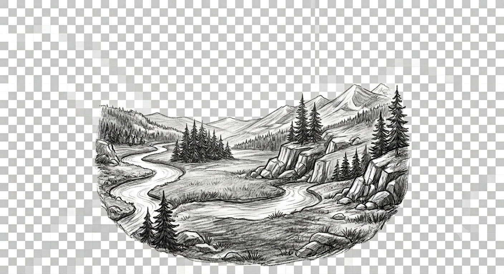

— Erimo TaniguchiSkipping the Japanese countryside is like going to France and only eating at McDonald's.
Why Visit Countryside?
Do you really want to travel halfway across the world just to stand in a 2-hour line with a thousand other tourists?
Too friendly old people
Out here, a local grandparents will treat you like her own grandkid, even if they don't speak a word of English.
Homemade Japanese food
Forget any convenience store snacks and overhyped tourist restaurant.

Beautiful Nature
Let's get muddy, stand under a waterfall, and return to nature.